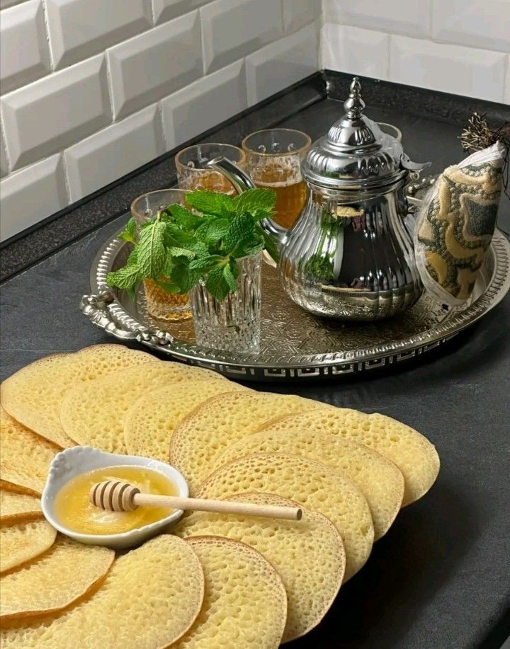

Moroccan Desserts : Baghrir

Description
Baghrir is a famous Moroccan dessert that you can enjoy either with tea or a warm cofe
Ingredients
- 2 cups semolina
- 1 cup white flour
- 2 bags of sweet yeast
- ½ teaspoon salt
- 1 teaspoon yeast
- 4 cups warm water
- 1 cup honey
Steps
- Put in a large bowl: semolina, white flour, sweet yeast, salt, and yeast.
- Add water to the previous ingredients, then mix this mixture well.
- Leave the mixture for 15 minutes until it rests.
- Bring the special baghrir frying pan, turn on the fire, and use a large ladle to distribute the mixture well.
- Repeat the previous step until the quantity runs out.
- Serve the baghrir immediately with a cup of honey and milted butter in a serving dish.